Menikmati beragam destinasi wisata, mulai dari sejarah, udaya, hingga hiburan modern di Kota Semarang. Semarang, kota yang memadukan pesona masa lalu dengan semangat kemajuan masa kini.
Wisata Bersejarah di Kota Semarang
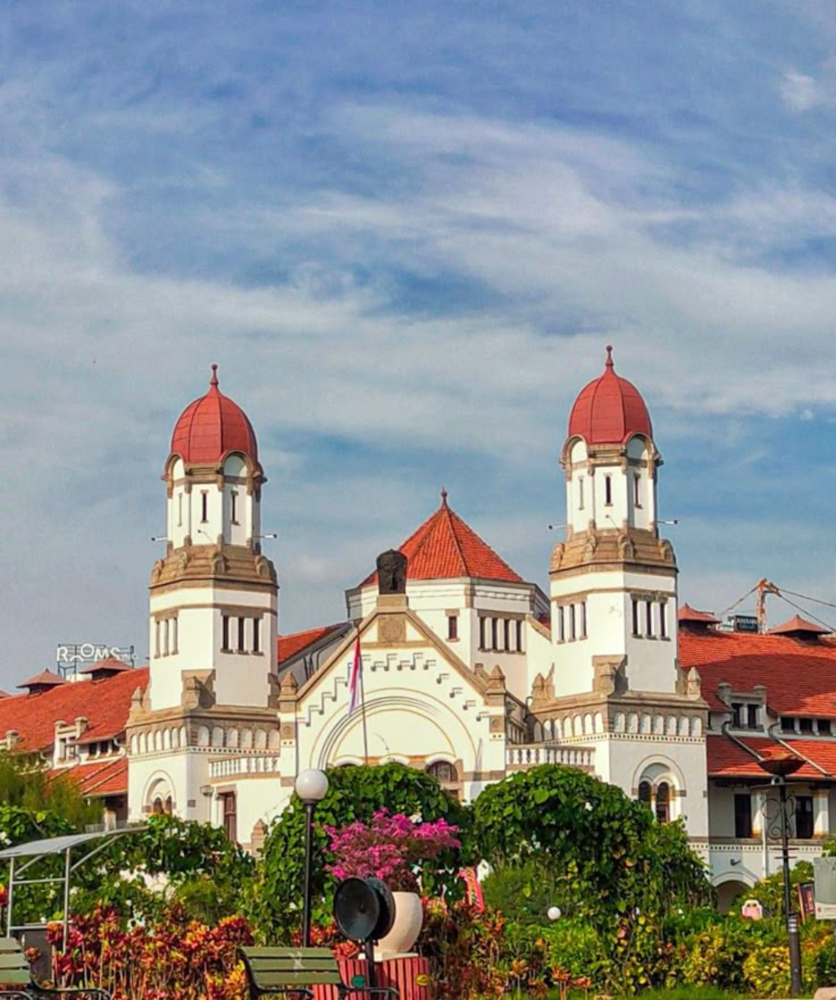
Lawang Sewu
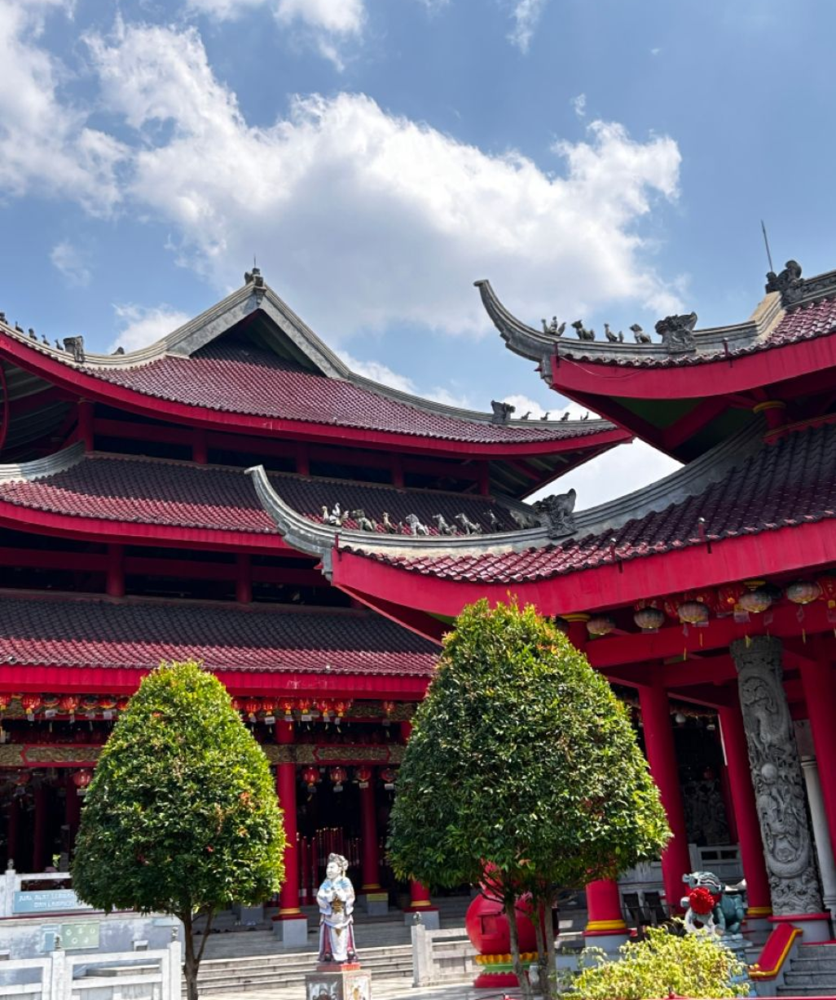
Sam Poo Kong
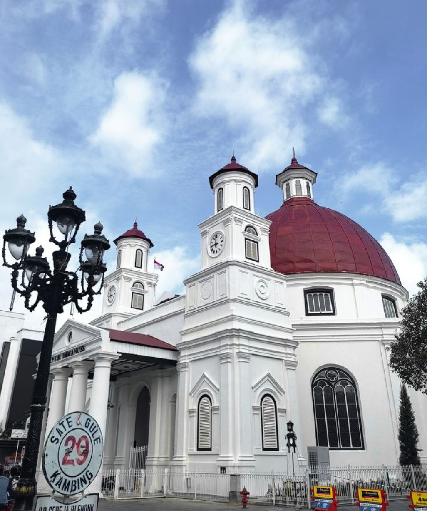
Kota Lama
Wisata Hiburan Keluarga
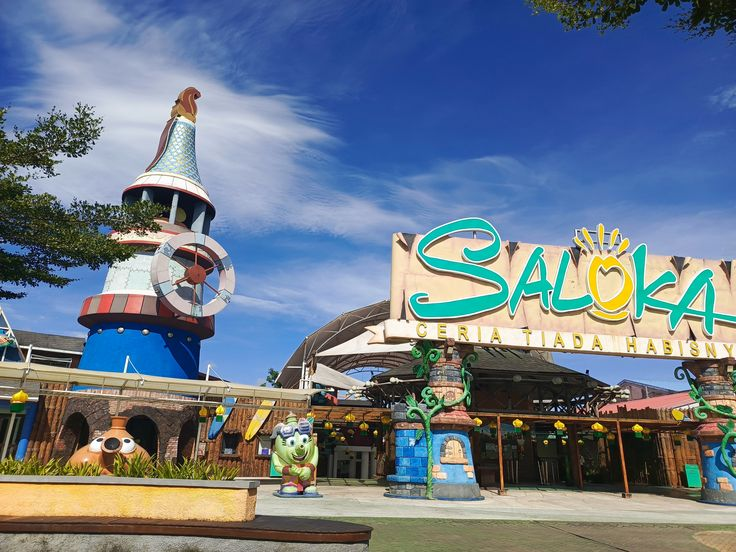
Saloka Theme Park
Taman bermain terbesar di Jawa Tengah yang mengusung tema legenda Nusantara. Dilengkapi berbagai wahana seru untuk anak-anak hingga dewasa, serta area kuliner dan pertunjukan yang cocok untuk wisata keluarga.
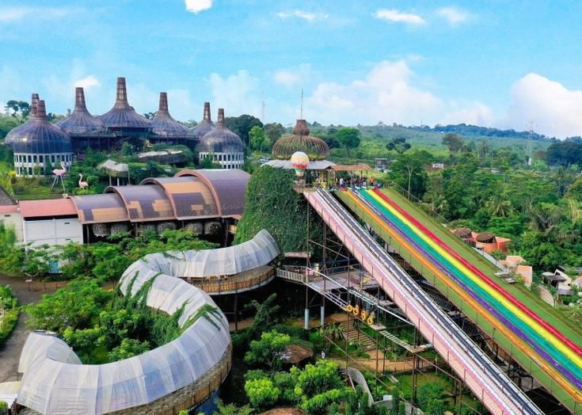
Dusun Semilir
Wisata bernuansa eco-park dengan spot foto unik, jembatan kaca, serta area kuliner.
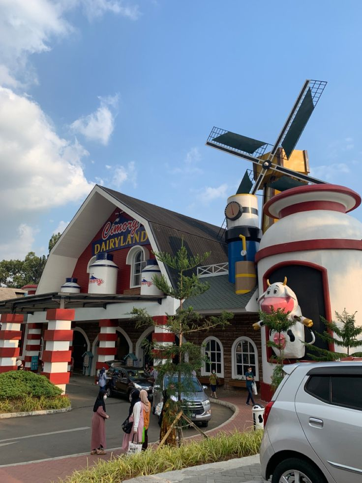
Dailyland On The Valley
Tempat wisata dengan suasana perbukitan dan area foto aesthetic.
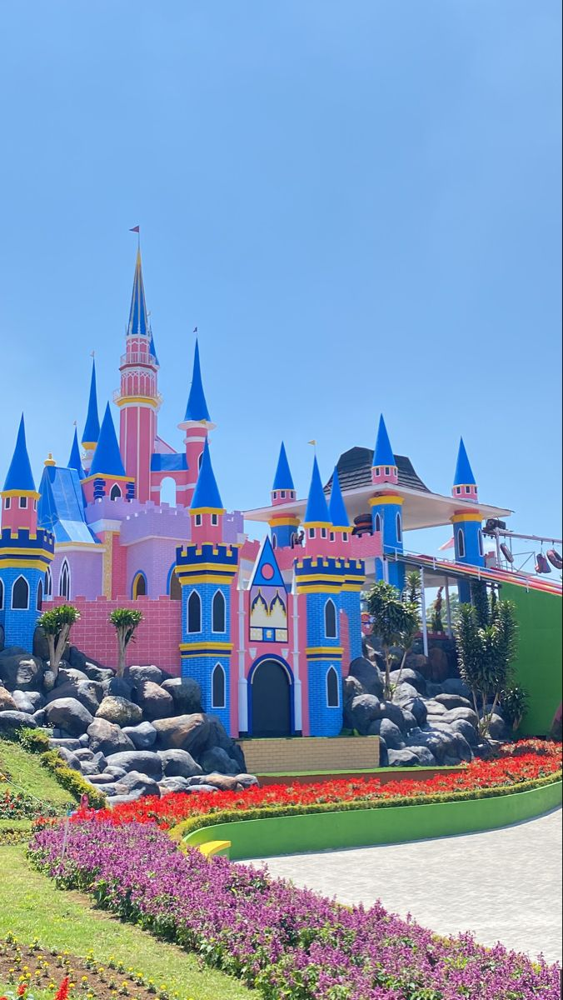
Taman Bunga Celosia
Destinasi warna-warni dengan hamparan bunga indah dan spot foto menarik.
.png)
Wisata Religi & Wisata
Sam Poo Kong
Klenteng bersejarah peninggalan Laksamana Cheng Ho, menjadi salah satu ikon budaya dan religi di Semarang. Pengunjung dapat menikmati keindahan arsitektur bergaya Tionghoa serta suasana yang penuh nilai sejarah.
Pagoda Avalokitesvara Watugong
Pagoda tujuh tingkat dengan warna merah keemasan yang megah, berdiri di tengah suasana tenang. Selain menjadi tempat ibadah, lokasi ini juga populer sebagai spot foto dan wisata spiritual yang damai.
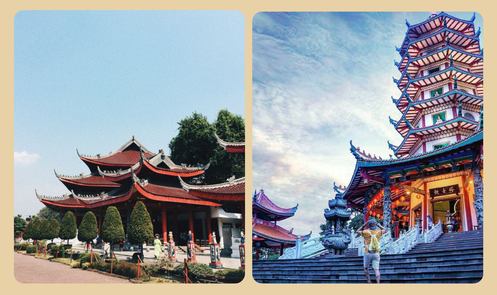
Wisata Alam Semarang
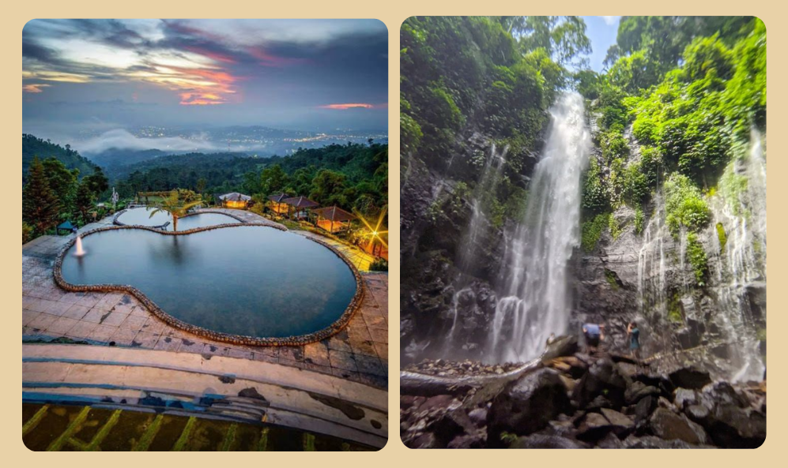
Umbul Sidomukti
Dikenal dengan kolam alami dan sumber air pegunungan yang jernih. Pengunjung bisa menikmati kesejukan air dan panorama alam terbuka.
Curug Lawe Benowo Kalisidi
Air terjun kembar di kaki Gunung ungaran dengan pemandangan hutan tropis dan udara segar. Medan menuju lokasi cukup menantang, tapi sepadan dengan keindahan curug yang masih alami.
Our Gallery
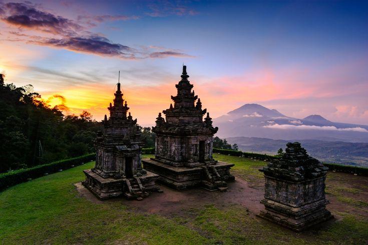
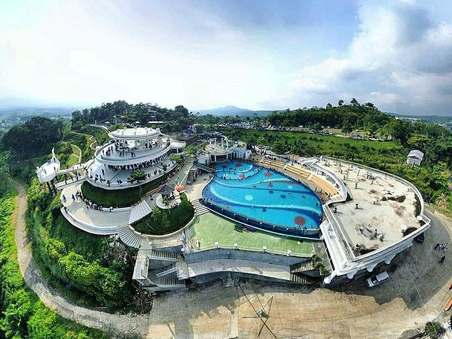
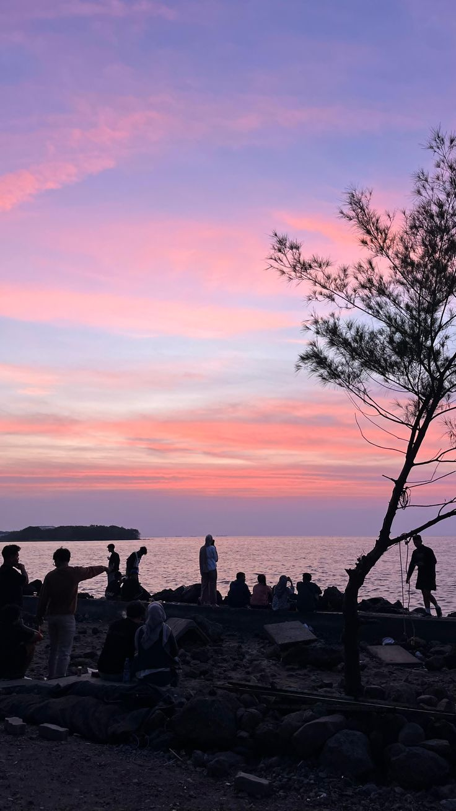
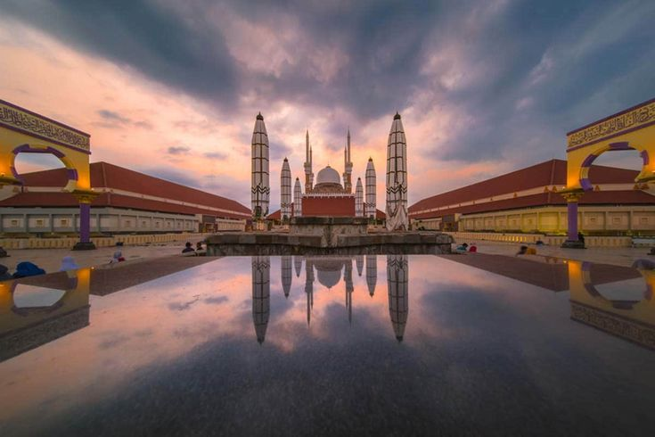
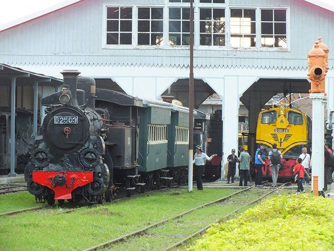
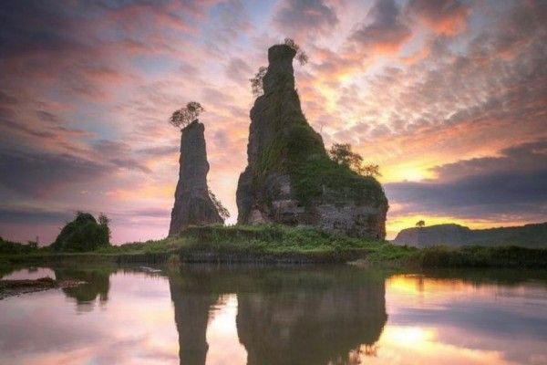